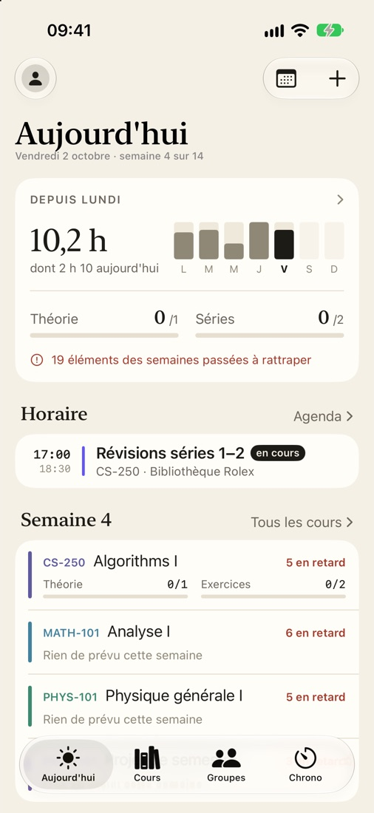
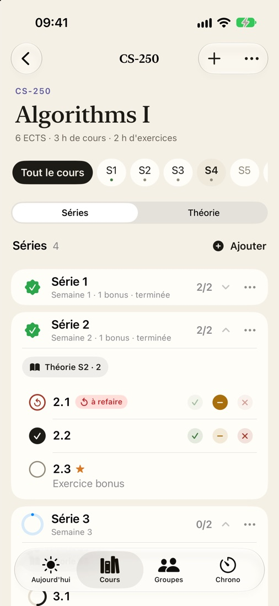
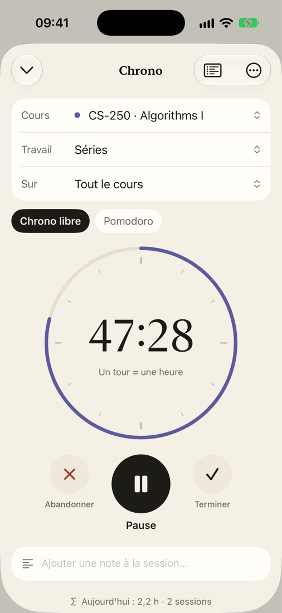
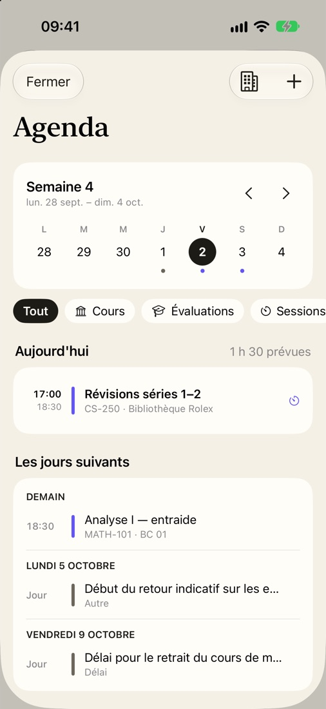

Moodle,
enfin rangé.
StudyTrack lit tes cours EPFL sur Moodle et les classe par semaine. Tu ouvres l'app, tu sais quoi faire.

Un semestre type. Une ligne par cours, une case par semaine : un point pour la théorie, un carré pour une série.

Import
Tu te connectes une fois.
L'app parcourt chacun de tes cours, ouvre les dossiers, lit les PDF des séries et met chaque vidéo, série et rendu dans sa semaine. Une nouvelle série publiée sur Moodle arrive toute seule.
Ton mot de passe se tape sur la page de l'EPFL, pas dans l'app.

Temps d'étude
Des heures qui veulent dire quelque chose.
Les cours magistraux comptent d'eux-mêmes. Une séance d'exercices ne compte que si tu lances le chrono : être assis dans la salle ne suffit pas.
Tu compares ensuite avec ce que l'EPFL prévoit pour tes crédits.

Groupes et to-do
Le reste, si tu veux.
Avec un groupe, tu vois qui travaille en ce moment et où chacun en est dans les séries. Les messages sont chiffrés de bout en bout.
Tes to-do (Rappels, Todoist, TickTick, Notion, Things, Google Tasks) apparaissent dans l'agenda, à côté de ton horaire.
Tes données restent sur ton téléphone.
Pas de compte obligatoire, pas de pub, pas de traceur. Seul ce que tu partages dans un groupe passe par notre serveur. Le détail
In English. StudyTrack is an iPhone app for EPFL students. It reads your courses on Moodle and sorts lectures, exercise sheets and deadlines by week, and it tracks the time you actually study. Your data stays on your device. Privacy policy